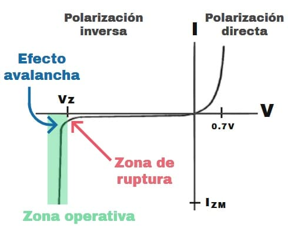
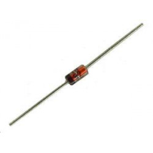
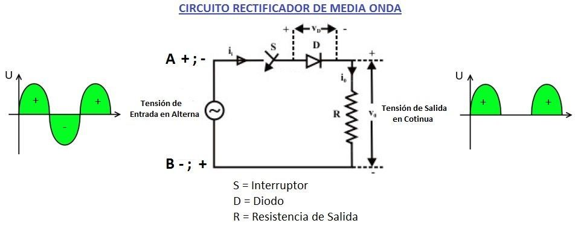

Diodos
Introduccion:
Un diodo es un componente electrónico de dos terminales que permite la circulación de la corriente eléctrica
a través de él en un solo sentido, bloqueando el paso si la corriente circula en sentido contrario, no solo
sirve para la circulación de corriente eléctrica sino que este la controla y resiste. Esto hace que el diodo
tenga dos posibles posiciones: una a favor de la corriente (polarización directa) y otra en contra de la
corriente (polarización inversa).
Los primeros diodos eran válvulas o tubos de vacío, también llamados válvulas termoiónicas constituidos por
dos electrodos rodeados de vacío en un tubo de cristal, con un aspecto similar al de las lámparas
incandescentes.
Curva del diodo

De forma simplificada, la curva característica de un diodo (I-V) consta de dos regiones: por debajo de cierta diferencia
de potencial, se comporta como un circuito abierto (no conduce), y por encima de ella como un circuito cerrado con una
resistencia eléctrica muy pequeña. Debido a este comportamiento, se les suele denominar rectificadores, ya que son
dispositivos capaces de suprimir la parte negativa de cualquier señal, como paso inicial para convertir una corriente
alterna en corriente continua.
Simbolos

Tipos de diodos:
Diodo detector o de baja señal

Los diodos detectores también denominados diodos de señal o de contacto puntual, están hechos de
germanio y se caracterizan por poseer una unión PN muy diminuta. Esto le permite operar a muy
altas frecuencias y con señales pequeñas. Se emplea por ejemplo, en receptores de radio para
separar la componente de alta frecuencia (portadora) de la componente de baja frecuencia
(información audible). Esta operación se denomina detección.
Diodo rectificador
Un diodo rectificador es un dispositivo electrónico que permite convertir la corriente alterna en
corriente continua. Y tenemos de 2 tipos:
rectificador de media onda

Rectificador de onda completa